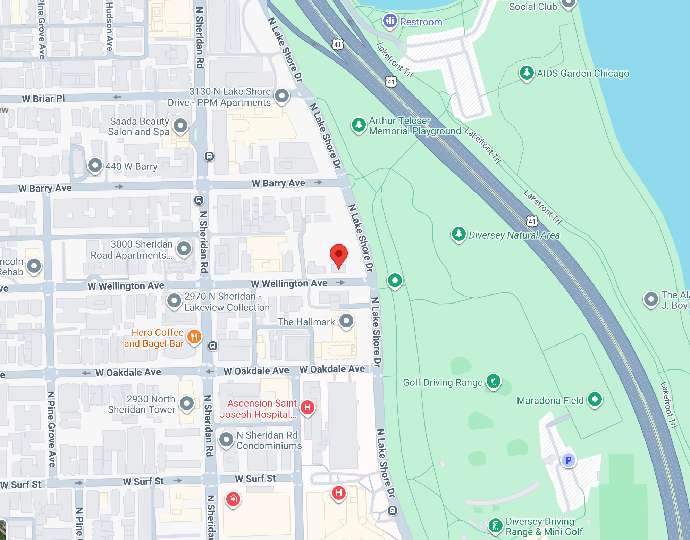

Subsidizing the Rich: The Hidden Cost of Chicago’s Luxury Side Yards

In high-demand areas, wealthy homeowners frequently purchase adjacent tear-down properties, demolish the existing structures, and absorb the parcels as massive private side yards. Because property taxes in Illinois assess vacant land drastically lower than improved land, these homeowners pay a fraction of the tax per square foot compared to their own primary residence. Chicago effectively subsidizes these rich home owners to keep the lot empty as redeveloping the property would bring in more property taxes.
Our analysis found 463 adjacent empty lots owned by neighbors in just five high-demand north and west side neighborhoods. This is likely a significant underestimate, as there are plenty of side lots lots which don't automatically match the filters described in the next section.
Analysis and Methodology: Defining the "Side Yard"
An empty lot is only counted if it passes a strict set of spatial, legal, and economic filters:
1. Spatial & Zoning Filters
- Residential Zoning: The lot must be zoned exclusively for residential use (
RS,RT, orRM). - Adjacency: The empty lot and the built lot must be geographically adjacent (intersecting within a 5-foot spatial tolerance).
2. Ownership Matching
- Taxpayer Verification: The empty lot and the adjacent home must have the exact same owner.
3. Value and Condition Thresholds
- The "Empty" Lot: The side lot must have an estimated building value of <$10,000, signifying it is effectively vacant or a demolished teardown. It must also have a Cook County Assessor property class corresponding to vacant land or uninhabitable teardowns.
- The Primary Residence: The adjacent home owned by the same taxpayer must have an estimated market value of at least $500,000, ensuring we are capturing high-value property expansions rather than distressed blocks.
I then manually verified the list and removed some outliers or lots that have been developed since the data was last updated.
The Cost of the Status Quo
If these vacant side lots were taxed at the exact same rate per square foot as the neighboring home they are attached to, the city would collect an estimated $5,736,594 in additional property taxes every single year.
The Upzoning Solution
Illinois law makes it difficult to heavily tax vacant residential land based purely on highest-and-best-use due to constitutional uniformity clauses. However, upzoning provides a legal pathway to raise some taxes. The recently announced BUILD act legalizes 4 unit condos on these parcels by-right, which will increase the underlying land value. The property taxes will rise organically, and owners to either pay a slightly larger (but still heavily subsidized) premium for their private park or sell it to a developer.
But the true "opportunity subsidy" is much higher. By allowing these parcels to sit idle in high-demand neighborhoods, the city is effectively walking away from $23,423,846 in annual tax revenue that would be generated if these lots were developed into the 4-unit buildings allowed under the BUILD Act.
Chicago is subsidizing the exclusivity of the wealthy over $23 million every single year while missing out on 1,852 much needed houses.
Park Proximity
Even if owners choose to sell rather than pay the slightly increased tax rate, they stand to gain significantly from the increased land value that comes with higher-density zoning. And while they might lose their private green space, 84% of these lots are a 5 minute or less walk from the nearest park. Some of them are even directly next to a park, like this one in Lakeview East.
